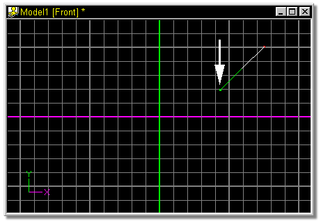
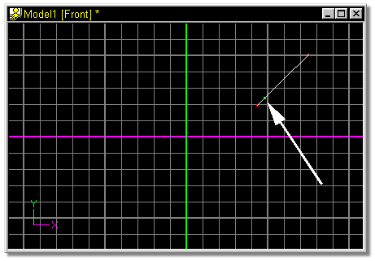

Many splines can share the same visible control point. When a control point
is selected by clicking on it, the selected spline will turn green. The selected
spline can be changed by pressing the Tab key on the keyboard.
Many splines can share the same visible control point. When a control point
is selected by clicking on it, the selected spline will turn green. The selected
spline can be changed by pressing the Tab key on the keyboard.
Control points can be inserted in the active spline by clicking the Insert Button. This function can also be used to add a control point to the end of a spline. Normally, splines enter and exit a control point, but can, at times, only enter a control point and end. By using the Tab key to cycle through the splines, the missing spline will become selected (it will not highlight in green since it is not there). A control point can be added to the end of this missing spline, by clicking the Insert button.
The default keyboard shortcut key for Insert is Y.

Click a control point to highlight the spline that the control point is to be inserted onto. The selected spline will turn green.

Click the Insert button on the Tool Panel.
The resulting spline:

Related Topics:
Adding Control Points
Attaching Control Points
Break Spline
Delete Control Point
Detach Point
Smooth
Peak
Magnitude
Bias